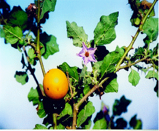
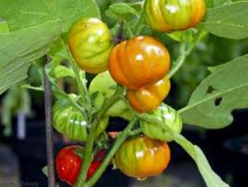
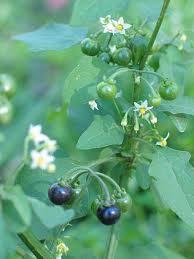
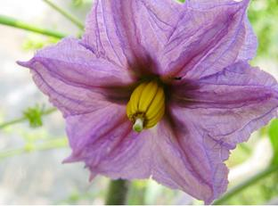
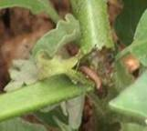
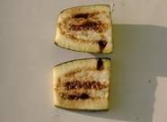
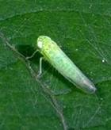
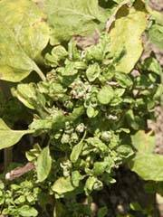

HORT 281 :: Lecture 05 :: ORIGIN, AREA, PRODUCTION,VARIETIES, PACKAGE OF PRACTICES FOR BRINJAL

Origin, area, production, varieties, package of practices for brinjal
Brinjal - (Syn: Egg plant) (Solanum melongena L.) (2n = 24) Hindi: Banigan)
Brinjal is one of the most common tropical vegetables grown in India. It is known by different names like aubergine (French), begun (Bengali), ringna (Gujarathi), baingan (Hindi) badane (Kannada), waangum (Kashmiri), vange (Marathi), baigan (Hindi) badane (Kannada), waangum (Kashmiri), vange (Marathi), baigan (Oriya), Vashuthana (Malayalam), Kathiri (Tamil), venkaya (Telugu) and Peethabhala (Sanskrit). A large number of cultivars differing in size, shape and colour of fruits are grown in India. Immature fruits are used in curries and a variety of dishes are prepared out of brinjal. Fruits are moderate sources of vitamins and minerals like phosphorous, calcium and iron and nutritive value varies from variety to variety.
Brinjal is also valued for its medicinal properties and has got decholestrolizing property primarily due to presence of poly-unsaturated fatty acids (linoleic and lenolenic) present in flesh and seeds of fruit in higher amount (65.1%). Presence of magnesium and potassium salt in fruits also impart de-cholestrolizing action. In native medicines, role of brinjal in treatment of liver diseases, cough due to allergy, rheumatism, colilithiasis, leucorrhea and intestinal worms has been mentioned.
Origin and distribution
Brinjal is originated in Indo- Burma region (Vavliov, 1926). Crop is distributed in south and south East Asia, southern Europe, China and Japan. India is the second largest producer of brinjal in the world next to China and produces 83.47 lakh tonnes from an area of 5.02 lakh ha. Cultivation of brinjal is maximum in Orissa, West Bengal, Bihar and is also distributed in almost all states.
Taxonomy Genus Solanum comprises approximately 2000 species, which include both tuber bearing and non-tuber bearing forms. Important edible species under non-tuber bearing forms are S. melongena, S. torvum, S. nigrum, S. macrocarpom, S. ferox and S. aethiopicum
S. torvum – used for its small clustered fruits for curry purpose and for drying. It is grown as a wild plant in backyards and roadsides. Due to its resistance to Fusarium wilt and bacterial wilt, S. torvum can be a resistant root stock for grafting cultivated S. melongena
S. macrocarpom and S.aethiopicum – grown for edible fruits and leaves.
|  |  |
| Solanum macrocarpom | Solanum aethiopicum |
Solanum nigrum – Small clustered acidic fruits are also edible and are harvested ripening stage when it turns purple in colour. In Tamil Nadu this species is cultivated and for frying. Leaves and flowers of S. nigrum have more resemblance to that of chill
 S. nigrum |
Several species of Solanum are used in native medicines through out tropics. S. melongena var. insanum, S. incanum, S. indicum, S. viarum are a few among them.
Studies on inter-specific hybridization revealed incompatibility between cultivated S. melongena with other species, except with S. incanum. Further taxonomic studies revealed that S. incanum is only a variety under S. melongena and can be treated as S. melongena var. incanum.
Based on growth habit and fruit shape, four botanical varieties are reported under S.melongena.
S.melongena var. melongena (Syn: S.melongena var. Esculenta Nees) includes cultivars with round and egg shaped fruits
S.melongena var serpentinum Desf. Includes long and slender fruited cultivars
S.melongena var. depressum includes early and dwarf cultivars
S.melongena var. incanum includes wild and prickly plants with small fruits.
Botany
Brinjal is a diploid with 2n=2x=24. Plant is erect, semi erect or prostrate, herbaceous and branched with around 1.0m height. Stem is spiny or non spiny with or without purple pigmentation which is due to anthocyanin. Flowers are bisexual, pentamerous and are solitary or in 2-7 flowered cyme. Calyx is persistent and spiny or non spiny. Corolla is lobed with different shapes and purple, light pink or white coloured. Stamens are free and form a loose cone surroundings the style. Dehiscence is poricidal. Ovary is bilocular with many ovules. Heterostyly is very common. Fruit is a berry with wide variation in shape, colour and size. Fruit
shape may be long, oval, round, ovoid, cylindrical or elongated. Fruit colour may be nearly black, different shapes of purple, white, green or variegated. 
Flower biology and pollination
Though reported as a self pollinated crop, cross pollination to varying degree has been reported in brinjal. Cross pollination is due to its heteromorphic flower structure and is mainly by honey bees and bumble bees.
Depending on length of style in relation to position of anthers, four types of flowers – heterostyly are available.
Long styled – stigma well above the anthers
Medium styled – stigma and anthers at same level
Short styled – style short
Pseudoshort styled – style rudimentary
Fruit set in long styled flowers ranges from 60 to 70% whereas in medium styled flowers it is 12.5 to 55.6%. Short styled and pseudoshort styled flowers act as male flowers and there is no fruit.
Opening of flower and dehiscence of anthers are almost simultaneous and it takes place at 6-7.30 am during summer and is delayed up to 11 am during winter. Flowering depends on climatic factors and high temperature and humidity in the morning hasten flower opening and dehiscence of anthers. In addition to climatic factors, fertility level of the soil also influences flower initiation and development.
Climate
Brinjal is warm season day neutral plant and is susceptible to severe frost. A long and warm growing season with a temperature range of 21-270C is ideal for its production. Crop is adversely affected by chilling temperature of winter in North India. Generally late cultivars can withstand low temperature than early ones. Plants grown luxuriantly and yield heavily during rainy season under warm humid climatic condition of Kerala.
Soil
Brinjal is a hardy crop and is cultivated under a wide range of soils. Since a long duration crop with high yield, well-drained and fertile soil is preferred for the crop. Crops grown in sandy soils yield early and those grown in clayey soils yield more. Ideal pH for cultivation of crop is 5.5-6.6
Varieties
A large number of cultivars and improved varieties differing in size, shape and colour of fruits are grown in India. Since consumer preference varies from region to region and from district to district, judicious selection of varieties plays an important role in success of brinjal cultivation. Quite a large numbers of local cultivars like Banaras Giant, Wayanad Giant, Mukthakeshi and Manjiri Gota are grown in specific areas.
Fruits of some local cultivars exhibit bitterness due to presence of glycolalkaloids like solanin. Generally glycol-alkaloid content varies from 0.37 to 4.83 mg/ 100g in most of cultivars. High glycol –alkaloids (20 mg/100g fresh weight) produces bitter taste and off flavour. Varieties also vary for content of polyphenol oxidase which imparts brown discoloration when the fruits are cut open.
Pest and disease resistant/ tolerant varieties with upright and sturdy growth habit, high yield, fruits with soft flesh, low seediness, low solanin content and attractive glossy skin are generally preferred for commercial cultivation.
The important features of improved brinjal varieties developed in India are furnished below:
Developing institution |
Variety |
Special features |
IIHR, Bangalore |
Arka Kusumakar |
Small green fruits borne in clusters of 5-7 |
|
Arka Sheel |
Medium long deep shining purple fruits. |
|
Arka Nidhi (BWR 12) |
Resistant to bacterial wilt, medium long blue black glossy fruits. |
|
Arka Shirish |
Extra long fruits with green colour |
|
Arka Neelkanth |
Resistant to bacterial wilt, short purple fruits borne in clusters of two |
|
Arka Keshav |
Resistant to bacterial wilt, Fruits long red purple and glossy. |
IARI, New Delhi |
Pusa Kranti |
Oblong, 15-20 cm long dark purple fruits |
|
Pusa Purple Cluster |
10-12 cm long deep purple fruits borne in clusters tolerant to bacterial wilt |
|
Pusa purple long |
Long purple glossy fruits |
|
Pusa Anupam (KT4) |
Cylindrical purple fruits borne in clusters |
|
DBR 8 |
Round dark purple fruits of 295g |
|
Pusa purple round |
Fruits round and purple |
|
Pusa Bairav |
Resistant to phomopsis blight. Fruits long and purple |
|
Pusa Uttam |
Early variety with oval dark purple fruits |
|
Pusa Utkar |
Early variety with round dark purple fruits |
|
Pusa Bindu |
Early. Small oval-round violet-purple fruits |
|
Pusa Ankur |
Fruits oval round, dark purple and glossy |
Kerala Agrl. University, Thrissur |
Surya (SM 6-7) |
Resistant to bacterial wilt, small purple oval fruits |
|
Swetha (SM 6-6) |
Resistant to bacterial wilt, small white elongated fruits |
|
Haritha |
Resistant to bacterial wilt, long light green elongated fruits, Long duration |
Tamil Nadu Agricultural University, Coimbatore |
CO 1 |
Oblong, pale green fruits |
|
CO 2 |
Oblong fruits having dark purple streaks under pale back ground |
|
PKM 1 |
Small ovate fruits with green stripes, developed through mutation breedings |
|
PLR 1 |
Small to medium sized egg shaped fruits with purple colour |
|
MDU 1 |
Large, round and purple fruits |
|
KKM 1 |
Small, white coloured and egg shaped fruits borne in clusters of 2-4 |
Annamalai University, |
Annamalai |
Aphid resistant. Fruits oblong, purple, few thorns on the calyx |
GBPUA&T, Pantnagar |
Pant Rituraj |
Large purple round fruits |
|
Pant Samrat |
Resistant to bacterial wilt and phomopsis blight, less infestation of shoot and fruit borer and jassids. Fruits long and purple. |
Haryana Agrl. University, Hisar |
Hisar Pragati (H 7) |
Fruits dark bright purple, tolerant to little leaf round, dark and bright purple fruits oblong dark purple fruits. |
|
Hisar Shyamal (H8) |
Round, dark and bright purple fruits. |
|
Hisar Jamuni |
Oblong dark purple fruits |
Punjab Agrl. University, Ludhiana |
Jamuni GOl (S 16) |
Long plumy and shining purple fruits |
|
Punjab Barsati |
Tolerant to fruit borer, fruits medium long and shining purple |
|
Punjab Neelam |
Long purple fruits |
|
Punjab Sadabahar |
Long black purple fruits |
|
PH 4 |
Fruits medium to long, thin and dark purple |
CSAUA&T, Kanpur |
T-3 |
Round light purple frits with white styler end |
|
KS 331 |
Long purple fruits of 218 g weight |
|
Azad Kranti |
Medium thick and long purple fruits tapering to distal end |
|
Azad B 2(KS 224) |
Solitary round purple fruits of 135 g |
MPKV, Akola |
Aruna |
Fruits round to oval with light purple rind |
DARL, Pithoragarh |
ARU 1 |
Long light purple fruits borne single or double |
|
ARU 2 C |
Resistant to bacterial wilt, cylindrical and violet fruits borne in clusters of 4-6 |
CHES, Ranchi |
CHBR -1 |
Round dark violet fruits |
JNKV, Jabalpur |
JB 15 |
Long violet purple fruits of 270 g weight |
|
JB 64-1-2 |
Small round purple fruits of 95 g weight |
OUA &T |
Utkal Tarini (BB 77) |
Resistant to bacterial wilt, medium sized oblong deep purple fruits |
|
Utkal Madhurai (BB 44) |
Resistant to bacterial wilt, medium long green fruits with white striped distal end |
|
UTkal Jyothi (BB 13) |
Tolerant to bacterial wilt, small to medium long purple fruits |
|
Utkal Kesari (BB 26) |
Tolerant to bacterial wilt, small to medium long purple fruits |
RAU, Sabour |
Green long |
Long green fruits of 135 g |
APAU, Hyderabad |
Gulabi (Sel 4) |
Light purple, medium long fruits borne in clusters of 3-5 suitable for long distance transport. Very small purple round fruits |
|
Shyamala Bhagyamathi |
Oblong and deep purple fruits |
PRVV, Akola |
Aruna |
Small round deep purple fruits |
MPKV, Rahuri, Maharashtra |
Vaishali |
Fruits oblong, purple with white stripes |
|
Pragati |
Fruits oval, purple with white stripes and spines on peduncle |
Exploitation of Heterosis
Brinjal continues to be a choice of breeders for exploitation of heterosis due to hardy nature of crop, comparatively large size of flowers and large number of seeds in a single fruit enabling production of a large number of F1 seeds with a single act of pollination. Highly varied consumer acceptance from region to region also demands for development of a large number of high yielding F1 hybrids. Hand emasculation and pollination are still followed in the hybrid seed production of brinjal. Quite a large number of heterotic hybrids are developed in ICAR institutes and State Agricultural universities and details are furnished below:
Developing institution |
Hybrid |
Parents |
Special features |
IARI, New Delhi |
Pusa Anmol |
Pusa Purple long x Hyderpur |
Produce 80% more than Pusa Purple Long, yield 62t/ha |
|
Pusa Hybrid 5 |
- |
Long glossy dark purple fruits. Yield 51.6t/ha |
|
Pusa Hybrid 6 |
- |
Early. Round glossy purple fruits. Yield 45.0t/ha |
|
Pusa hybrid 9 |
- |
Early dark purple round fruits. Yield 56.0t/ha |
IIHR, Bangalore |
Arka Navneeth |
IIHR 221 x Supreme |
Large dark purple round to slightly oval fruits. Yield 65-75 t/ha |
|
Arka Anand |
IIHR -3 x SM 6-6 |
Resistant to bacterial wilt, fruits green long & medium sized (50-55g). yield 65t/ha |
Tamil Nadu Agricultural University, Coimbatore |
COBH 1 |
Cross between EP 45 x CO 2 |
Fruits are purple in colour. High yield 56.40 t/ha |
Haryana Agrl. University, Hisar |
Hisar Shyamal (H8) |
Aushey x BR 112 |
Resistant to bacterial wilt, tolerant to little leaf, rufts round bright purple |
Kerala Agrl. University, Thrissur |
Neelima |
Surya x SM 116 |
Resistant to bacterial wilt, protracted fruiting. Round to oval purple fruits. Yield 62 t/ha |
GAU, Anad |
ABH 1 |
M2 x M 35 |
Early variety with purple oval fruits, yield 37.0t/ha |
CSAUA&T, Kanpur |
Azad Kranti |
Pusa purple Loong x BGL |
Long dark purple fruits |
GBPUA &T, Pantnagar |
Pant Brinjal Hybrid 1 |
PB 121 x PB225 |
To learnt to bacterial wilt. Fruit long and borne in clusters |
In addition, a large number of F1 hybrids are marketed by private seed companies. Supriya, Suphal (IAHS), Kalpatharu, Ravaiya (Mahyco), Kanhaiya, Novkiran, Pragati (Sungro Seeds), Apsara, Nisha (Namdhari) etc are a few commercial hybrids popular among farmers.
Season
In hills, brinjal is sown during March and transplanted during April. In,lains there are three seasons for growing brinjal.
Autumn-winter crop
Crop is sown in June and transplanted in July Spring -summer crop: Crop is sown in early November and transplanted in January-February. Due to low temperature, seedlings take 6 to 8 weeks for attaining normal size for transplanting and nursery beds are to be protected from frost.
Rainy season crop
Seeds are sown in March-April and transplanted during April-May. Being a low priced vegetable, rainy season crop is the most economical in many parts.
Sowing
Seeds are sown in nursery bed and transplanted to main field after four weeks during summer and after 7 to 8 weeks during winter, when it is 8 - 10 cm tall. Depending on growth of varieties and seasons of cultivation, 300 to 3:500 g seeds are required for one hectare. Since brinjal seedlings grow fast, sufficient care must be taken to sow seeds as thin or loose as possible. Hardened seedlings withstand transplanting shock better and establish well in main field.
Main field preparation and transplanting
Proper drainage is essential for growth of brinjal. Soil should be prepared to a fine tilth by 4 to 6 ploughings. FYM should be incorporated in soil at the time of final ploughing. Seedlings .are transplanted in levelled land in plots of convenient size for irrigation. It may be grown on raised beds/ ridges during rainy season. In undulating land, in order to avoid soil erosion, small pits are dug at the point of planting and seedlings are planted.
Spacing depends on variety, season and fertility of soil. For long duration spreading varieties, a spacing of 75-90cm x 60-75 cm and for bushy and non-spreading varieties a distance of 45-60cm on either side are given. For early and less spreading varieties, paired row planting is advantages due to, easiness in harvesting and other cultural operations.
Manures and fertilizers
Brinjal is a long duration crop with high yield potential. Flower and fruit production will be adversely affected when crop is grown under low fertility conditions. Depending on availability, 25 tonnes of FYM/ha may be incorporated in soil at the time of final ploughing. Application of wet cow dung as a band, 10 -12 cm away from the plant, followed by earthing up at fortnightly interval during rainy season is a common practice for high productivity in Kerala.
Fertilizer requirement of crop varies with variety, season and type of soil. Fertilizer requirement for targeted production in Co-2 under Tamil Nadu condition is estimated and 7.6 kg N, 1.4 kg P and 17.3 kg K/ha are required to produce one tonnes of fruits. Fertilizer studies at various centres of AICRP (Vegetables) indicated varying results. Under Bangalore condition, 150 kg N and 100 Kg P20S were optimum while at Hisar it was 100 kg N and 60 kg P20sl ha. For a balanced nutrition, 30 to 60 kg ~O is included in fertilizer package of brinjal in most of the
states. 1/3 N, full P and full K should be applied as basal dose and remaining N in 2 split doses, 1/3 at 25 days after planting and remaining 1/3 N 45 days after.
Application of fertilizers in Tamil Nadu : Apply FYM 25 t/ha. N 50 kg, P 50 kg and K 30 kg/ha as basal dose, N 50 kg/ha 30 days after transplanting during earthing up. Apply 2 kg of Azospirillum and Phosphobacteria in the mainfield at planting. Spray 2 ppm (1 ml in 500 lit.) Triacontanol plus Sodium borate or Borax 35 mg/lit. of water 15 days after transplanting and at the time of full bloom to increase the yield.
Irrigation
Though brinjal cannot tolerate water logging, timely irrigation is essential especially for fruit set and development. In plains, irrigation is required at every third or 4th day during summer while in winter it should be at 10-15 days interval. During winter, care should be taken to keep soil moist to avoid crop loss due to frost injury. Being a row planted crop, drip irrigation is advantageous and water used in drip irrigation is only 24.47 cm compared to 69.18 cm under furrow method.
Brinjal is mainly grown as a rainfed crop in high rainfall states like Kerala by transplanting seedlings just before onset of South West monsoon. Here also transplanted seedlings should be given one or two life irrigations for initial establishment.
Intercultivation
It is essential to keep the field free of weeds especially at initial stages of crop growth and is usually done by 2-3 light hoeing or earthing up. This facilitates better aeration to root system and gives support to plants. Application of fluchloralin @ 1.5 kg a.i./ha as a pre-emergent weedicide, applied one week after transplanting seedlings, followed by one hand weeding at 30 days after planting controls a broad spectrum of weeds. Use of black polythene mulches is also efficient for suppression of weeds and for better growth of plants.
Application of growth regulators
Whole plant spray of 2-4, D (2 ppm) at an interval of one week from 60 -70 days after planting from commencement of flowering increase fruit set, early yield and total yield in brinjal. Spray Mixtalool (long chain C24-C34 aliphatic alcohol) at 4 ppm, 4-6 weeks after transplanting, is also effective and gave additional yield of 7.1% in F1 hybrid Arka Navneet.
Harvesting
Brinjal fruits are harvested at immature stage after attaining full size, but before loosing its glossy appearance. Dullness of fruit indicates over maturity. Usually fruits are harvested along with its stalk with a slight twist by hand. In some varieties, a sharp knife is also used for harvesting fruits along with fleshy calyx and a portion of fruit stalk. The harvested fruits are graded and packed in baskets or in loose gunny bags. Care should be taken to remove the fruits affected by Phomopsis blight.
Yield
Early short duration varieties: 20-30 t/ha
Long duration varieties: 35-40 t/ha
FI hybrids: 55-80 t/ha
Storage
Fruits can be stored for 7-10 days in a fairly good condition at 7.2-10°C with 85-90% RH. Keeping quality of fruits varies with variety. It is better to store at 20°C than at 6°C and in perforated polythene bags than under open condition.
Seed production
Though brinjal is considered a self pollinated crop, varying amount of cross pollination takes place because of heterostyly. Cross pollination is mainly through honey bees and bumble bees. To encourage pollination, it is advisable to plant Mimosa pudica in the vicinity of brinjal plot. Isolation distance recommended for brinjal is 200 m for foundation seed and 100 m for certified seed.
To maintain genetic purity, rouging should be conducted at pre flowering, flowering and initial fruiting stages. Leaving initial one or two harvests for vegetable purpose is advisable for detection and removal of off types and to avoid chances of contamination from off types.
Fruits are harvested at full ripe stage and crushed with help of a wooden hammer or stone. Crushed fruits are soaked overnight in buckets for softening. This results in easy separation of seeds from pulp when pulp is stirred next day morning. Seeds are then washed with running water and dried under open sun light for half to one hour and later under partial shade till 8% moisture is reached. Depending on variety used and agronomic packages followed, yield varies from 100-350 kg/ha.
Pests
Pests Fruit and shoot borer, jassids ,epilachna beetle and mites are the major pests.
Fruit and shoot borer (Leucinodes orbonalis)
|  |  |
The larvae bore into tender parts causing drooping of young shoots and rotting of fruits. Effect plant parts should be removed along with larvae and destroyed crushing or by immersing in insecticide solution.
Jassids (Empoasca spp.)
|  |
Adults and nymphs suck sap by feeding from under surface of leave resulting in typical yellowing and drying up of leaves. Varieties . Punjab Barsati and Pusa Kranti have tolerance to jassid attack.
Epilachna beetle
Yellow coloured nymphs seen on under surface leaves feed on foliage resulting in skeletonization of leaves. Since nymph are seen in large numbers on a single leaf plucking infested leaves along with nymph is an effective way control of pest.
Five sprays of cipermethrin @ 30 g a.i./ha or ethofenprox @ 75 g a.i/ at 15 days interval starting from 30 DAT is effecti.ve for control of jassi and fruit and shoot borer. Four sprays of carbaryl (800 g a.i/ha) at days interval starting from 30 DAT is also equally effective for control· pest.
Mites
Red spider mites and other mites seen on under surface of leaf suck sap and cause characteristic yellowing. Spray of neem oil garlic solution in initial stage of attack is effective for control of mites. Under severe infestation spray Kelthane (0.03%) or metasystox (0.03%).
Diseases
Diseases Bacterial wilt Fusarian wilt, phomopsis blight, little leaf, mosaic and damping off are the major diseases.
Bacterial wilt (Ralstonia solanacearum)
Disease results in sudden wilting and drying up of plants. Plants are more affected during flowering and early fruiting stages. Grow resistant varieties like Swetha, Haritha, Arka Nidhi, Arka Neelkant, Pant Samrat, Utkal Tarini, Utkal Madhuri and F1 hybrid Neelima in wilt prone areas.
Fungal wilt
Fungi like Fusarium and Verticillium cause wilting of plants. Lower leaves turn yellow and progress slowly leading to browning and complete death of plants. Pythium and Phytophthora also cause collar rot and wilting of plants. Crop rotation burning with dry leaves prior to planting and drenching the soil with copper oxychloride are effective for control of wilt.
Phomopsis blight
This is a major disease particularly when crop is raised for seed production. Soft and water soaked brown lesions of fruits which turn black and mummified in appearance are the common symptoms. Leaves and stem may also develop dark brown sports. Seed treatment with Bavistin (l g a.i./kg) and seedling dip in Bavistin (0.05%) for 30 minutes before transplanting, followed by two sprays of Bavistin are recommended for control of disease.
Little leaf:
|  |
Diseased plants produce small sized leaves and result in bushy and stunted growth and will not produce fruits.
Mosaic
Uproot and destroy mosaic and little leaf affected plants as soon as symptoms are noticed. Avoiding ratooning and raising seedlings in seed beds treated with Phorate (1.25 kg a.i./ha), treating seedlings with systemic insecticides for eight hours followed by application of Phorate (1.25 kg a.i./ha) at 21 DAT control both little leaf and mosaic.
Damping off
This is a major nursery disease. Affected seedlings topple over and die in patches. For reducing disease incidence sow seeds as loose/ thin as possible on raised beds. Adequate drainage are drenching nursery bed with Bavistin (0.1 %) control disease effectively.
******
1. Origin of brinjal
a. India b. China c. Sri Lanka d. America
2. Fruit set is high in
a. Long style b. Medium style c. Short style d. Pseudoshort style
3. Cross pollination is due to -----------------
4. Annamalai brinjal is resistant to
a. Aphid b. Jassid c. Fruit borer d. Bacterial wilt
5. Solanum species used for fruit and leaves --------------------
| Download this lecture as PDF here |